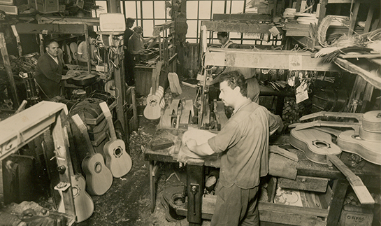

Higher Music

Higher Music
Somos una empresa familiar, fundada en el año 1935, dedicada a la fabricación y comercialización de instrumentos musicales. Originalmente la fábrica se encontraba ubicada en el barrio de Chacarita, dedicándose exclusivamente a la fabricación de guitarras. Con el correr los años se fue diversificando la actividad a la importación y comercialización de diversos tipos de instrumentos para satisfacer y acomodarse a las demandas que iban surgiendo en los musicos argentinos de cada década. Actualmente contamos con showroom en microcentro, servicio técnico, talleres especializados con los mejores técnicos para realizar cualquier tipo de trabajos.